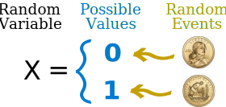
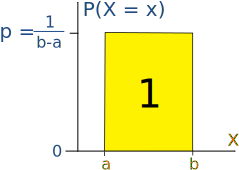
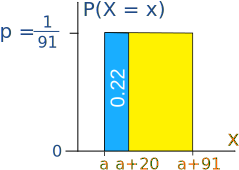
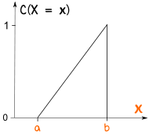
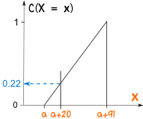
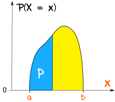
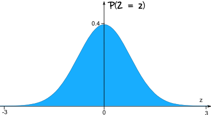
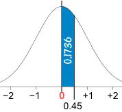

Random Variables - Continuous
A Random Variable is a set of possible values from a random experiment.
Example: Tossing a coin: we could get Heads or Tails.
Let's give them the values Heads=0 and Tails=1 and we have a Random Variable "X":

In short:
X = {0, 1}
Note: We could choose Heads=100 and Tails=150 or other values if we want! It is our choice.
Continuous
Random Variables can be either Discrete or Continuous:
- Discrete Data can only take certain values (such as 1,2,3,4,5)
- Continuous Data can take any value within a range (such as a person's height)
In our Introduction to Random Variables (please read that first!) we look at many examples of Discrete Random Variables.
But here we look at the more advanced topic of Continuous Random Variables.
The Uniform Distribution
The Uniform Distribution (also called the Rectangular Distribution) is the simplest distribution.
It has equal probability for all values of the Random variable between a and b:

The probability of any value between a and b is p
We also know that p = 1/(b-a), because the total of all probabilities must be 1, so
We can write:
P(X = x) = 1/(b−a) for a ≤
x ≤ b
P(X = x) = 0 otherwise
Example: Old Faithful erupts every 91 minutes. You arrive there at random and wait for 20 minutes ... what is the probability you will see it erupt?
This is actually easy to calculate, 20 minutes out of 91 minutes is:
p = 20/91 = 0.22 (to 2 decimals)
But let's use the Uniform Distribution for practice.
To find the probability between a and a+20, find the blue area:

Area = (1/91) x (a+20 − a)
= (1/91) x 20
= 20/91
= 0.22 (to 2 decimals)
So there is a 0.22 probability you will see Old Faithful erupt.
If you waited the full 91 minutes you would be sure (p=1) to have seen it erupt.
But remember this is a random thing! It might erupt the moment you arrive, or any time in the 91 minutes.
Cumulative Uniform Distribution
We can have the Uniform Distribution as a cumulative (adding up as it goes along) distribution:

The probability starts at 0 and builds up to 1
This type of thing is called a "Cumulative distribution function", often shortened to "CDF"
Example (continued):
Let's use the "CDF" of the previous Uniform Distribution to work out the probability:

At a+20 the probability has accumulated to about 0.22
Other Distributions
| Knowing how to use the Uniform Distribution helps when dealing with more complicated distributions like this one: |  |
The general name for any of these is probability density function or "pdf"
The Normal Distribution
The most important continuous distribution is the Standard Normal Distribution
It is so important the Random Variable has its own special letter Z.
The graph for Z is a symmetrical bell-shaped curve:

Usually we want to find the probability of Z being between certain values.
Example: P(0 < Z < 0.45)

(What is the probability that Z is between 0 and 0.45)
This is found by using the Standard Normal Distribution Table
Start at the row for 0.4, and read along until 0.45: there is the value 0.1736
P(0 < Z < 0.45) = 0.1736
Summary
- A Random Variable is a variable whose possible values are numerical outcomes of a random experiment.
- Random Variables can be discrete or continuous.
- An important example of a continuous Random variable is the Standard Normal variable, Z.